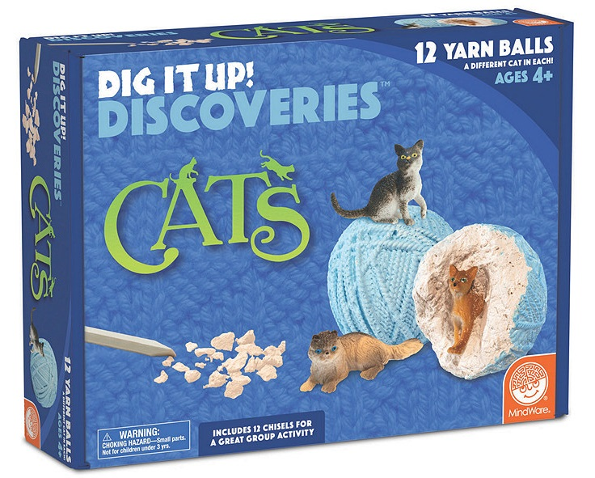

Just as Hercules had his 12 labours in Greek Mythology, Nora has 11 tasks for her 11th birthday to rescue Dig'em Ups!
For each task you need to find a matching colored lock and key to rescue the Dig'em Ups.
You can complete the tasks in any order.
